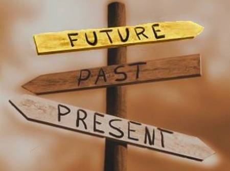
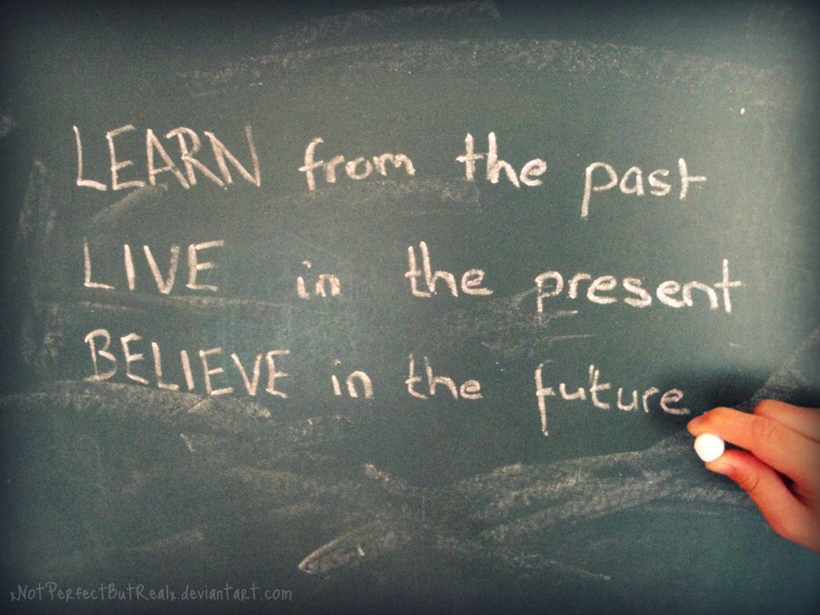

ĐÂY LÀ ĐÂU?
Tôi đã từng là một người giàu có!
Tôi đã từng rất thành công!
Tôi từng là thằng ăn trộm!
…..
Tôi sẽ thành công nếu tôi có thêm thời gian!
Nếu tôi có chiếc xe ấy, tôi sẽ du hý mọi nơi!
Nếu tôi có một tài sản kết xù ấy, hẳn tôi sẽ rất hạnh phúc!
…..
;Đây đôi khi được xem là những câu của miệng của đại bộ phận người chung quanh, umh họ luôn nói về bản thân mình trước kia hoặc những điều ở tương lai sẽ xảy ra với họ và thực tế hiện tại họ chỉ ngồi đó nói, mơ mộng, liên tưởng.
Có phải bạn cũng đã từng như vậy hoặc đang là như vậy, ngồi đó và suy nghĩ mãi về những thứ đã xảy ra và những thứ chưa xảy ra để rồi quên rằng xung quanh đang có nhiều thứ đang diễn ra.
Đó là hai loại người thường gặp trong cuộc sống hằng ngày, “Người sống trong quá khứ” và “Người sống trong tương lai” và cả hai đều là những người không thể thành công được nếu cứ sống mãi như thế!
Đầu tiên là những người sống trong quá khứ. Đây là những người chìm sâu trong bể bơi mang tên ký ức. Vui có, buồn có nhiều hơn, đa phần là sự hối hận, hối tiếc hay một lỗi lầm nào đó,…. nói chung đa phần đó là những thứ mà họ không muốn xảy ra hoặc diễn tiến theo một chiều hướng như thế. Và câu hỏi là nhớ lại rồi có thay đổi được gì không? Uh thì cái gì cũng có mặt tốt của nó cả, nhớ lại những chuyện đã qua, những việc đã lầm lỗi, những thứ đã không muốn xảy ra có thể rút ra được nhiều kinh nghiệm, biết được nhiều điều cần tránh và phải làm gì để không lặp lại điều đó. Tuy nhiên, đa phần họ nhớ lại và chìm đắm trong sự hối tiếc đó mà không nhìn thấy điều gì khác và chỉ trách, trách đời, trách người, trách bản thân,… Để rồi cuối cùng họ đánh mất khoảng thời gian còn lại vì khoảng thời gian đã qua đi.
Thứ hai là những người sống trong khoảng khắc của tương lai. Đây là những người đắm chìm trong mơ, những con người mơ mộng luôn muốn có một cuộc sống tốt đẹp cho mình. Cũng như những người sống trong quá khứ, những người sống mãi trong tương lai cũng có những mặt tốt của nó. Đó là động lực cho họ làm việc, là bức tranh họ đã vẽ ra, là mục tiêu họ hướng đến. Và cũng như những người sống trong quá khứ họ không thoát ra được cái mộng tưởng của mình và cứ mãi sống như thế ngày qua ngày, và họ bỏ lại khoảng thời gian quý giá của bây giờ để mãi sống trong mộng tưởng. “Giấc mộng sẽ mãi là mộng khi bạn chỉ biết có mộng”.
Và đương nhiên, có nhiều người không thuộc những lớp người nói trên, hay nói đúng hơn là những con người không giống những người trên. Họ cũng có quá khứ nhưng chỉ là những bài học cho họ trong cuộc sống, họ cũng có ước mộng của riêng họ nhưng đó là mục đích họ phải đạt được, cái quan trọng nhất là họ biết rằng mình không phải đang sống một trong hai khoảng thời gian ấy, họ đang sống trong khoảng thời gian gọi là hiện tại.
;Bạn nghĩ sao nếu chỉ mãi sống trong quá khứ, những thời gian của hiện tại sẽ lại trở thành quá khứ khi nó qua đi, thời gian là thứ không thể lấy lại khi đã mất đi, quá khứ cũng chẳng thể thay đổi khi bạn cứ mãi nhớ về chỉ là sẽ còn nhiều quá khứ khiến bạn hối tiếc nữa đấy. Bạn có muốn điều đó xảy ra không? Chẳng một người bình thường nào muốn như vậy cả. Và đó có thể là việc rất lớn, rất quan trọng, nhưng bạn có chắc đời bạn chỉ có bao nhiêu việc đó thôi không. Bạn không thể nhìn được tương lai âu, nhớ đấy!
Thế bạn nghĩ sao nếu chỉ mãi sống trong mộng tưởng về tương lai. Người ta nói giấc mơ không phải sự thật, và tính đúng đắn của nó là tùy vào bạn. Giấc mơ là của riêng mỗi người và chắc chắn chẳng ai đánh thuế giấc mơ và cũng chẳng ai đặt ra giới hạn cho giấc mơ cả cho nên bạn có quyền mơ, song bạn sẽ có lỗi với bản thân lắm khi chỉ mơ thôi mà không thực hiện điều đó.
Giấc mơ khiến người ta chìm đắm trong sung sướng để bỏ lỡ những cơ hội để tiến đến với ước mơ đó. Và cơ hội cũng như thời gian vậy, khi đã đi qua chẳng có thể trở lại âu!!
Thế mà quá nhiều người vẫn chìm đắm vào hai khoảng thời gian đó mà thứ cần họ tập trung lại bị bỏ qua không quan tâm. Qua một số người tôi đã quen biết thì lý do cho chuyện đó là do nó “Khó quá”, “Tôi không làm được”, “Không quan tâm”,…..
Cuộc sống là thế mà. Đây là một trường học và luôn có những bài kiểm tra và thi qua những thử thách, khó khăn,…. bạn sẽ mãi mãi không thể tốt nghiệp nếu cứ thi trượt như thế, chỉ những người can đảm làm bài thi và hoàn thành tốt bài thi mới có đủ điều kiện để thành công thôi. Đừng mãi nhìn những người đã tốt nghiệp mà ngưỡng mộ trong khi mình cũng có thể làm điều đó.
Hãy thôi tiếc nuối về những thứ không thể thay đổi đi, cũng hãy ngừng mơ mộng mãi về những gì chưa đến đi. Hãy sống trong bây giờ, hãy nhìn về bây giờ. Sống cho hiện tại là nghĩ về tương lai cũng là để không phải hối tiếc cho quá khứ.
;-- Chúc bạn luôn có những khoảng thời gian quý giá --